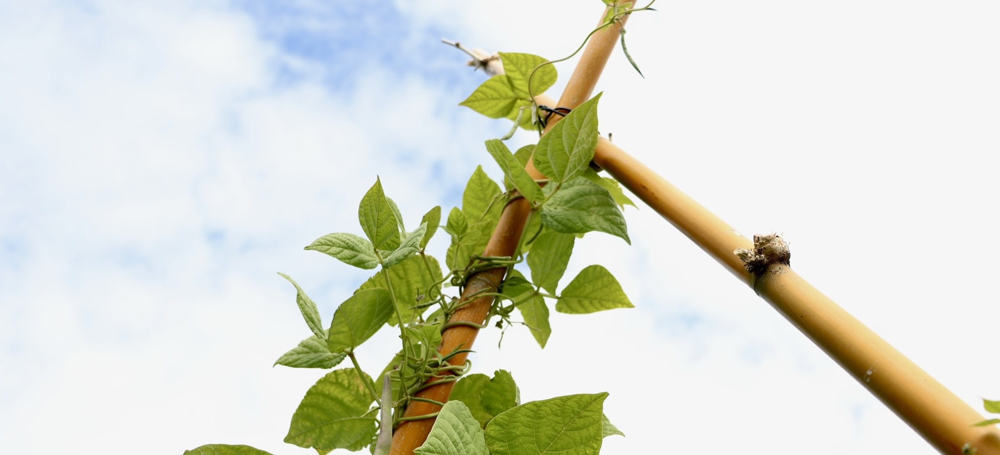

Inspiring and educating about kai in Aotearoa
Our mission is to inspire and educate on kaupapa relating to kai.
Kua whakaora ngā moemoeā o ngā wā o mua, kua tipua te mauri me ngā tikanga o ā tātou kai tūpuna.
The aspirations of our ancestors have been revitalised and their ways of kai are flourishing, helping people to live well for generations to come.
We facilitate wānanga for a range of communities on kaupapa that connect to kai.
The intent of these wānanga is to connect people to the ancestral ways of kai allowing physical, cultural, social and environmental well-being and connection to place and memories.
Reach out to us inquire about a standalone or series of wānanga.
Whakatipu Mana Kai started to take shape at the end of 2023, as an idea to be more connected to our food systems, to eat well, and to practice food sovereignty.
In December 2023, we had the spark of an idea to try eating only food from our garden, the bush, and the sea for one week, which we nudged up to one month. We set to preparing, preserving, and freezing our produce to begin our first ‘wero kai’ in May 2024. See how we spent our days here. With the wero kai idea taking form, we didn’t want to remove ourselves from our communities, and the idea of bringing a group together around the kai kaupapa, brought forward the idea of a series of wānanga.
Our wero kai has now become an annual challenge, and we are now preparing for a three month wero kai for 2025.
We are a couple living on the west coast of Tāmaki Makaurau, Aotearoa. We have a shared love of kai, and are excited to be bringing this kaupapa to life. Whakatipu Mana Kai
Tai Wright's Master's thesis 2024
This dissertation delves into the complex and multifaceted concept of Māori food sovereignty, exploring how it intertwines with broader efforts toward Indigenous self-determination. Through interviews and focus groups, the study uncovers the unique perspectives of Māori on food sovereignty, revealing its holistic nature that encompasses Māori identity, land, and environment. Participants highlight the intimate connection between kai (food) and whenua (land) and te taiao (environment), emphasizing the importance of reconnecting with the food-producing environment. The research also identifies challenges and proposes pathways for increasing Māori food sovereignty, advocating for greater Māori involvement in resource management based on traditional practices. Ultimately, the study underscores that the pursuit of food sovereignty is part of a larger call for (re)indigenisation and self-determination. This nuanced understanding offers valuable insights into the lived experiences and aspirations of Māori in the context of a dominant colonial society.